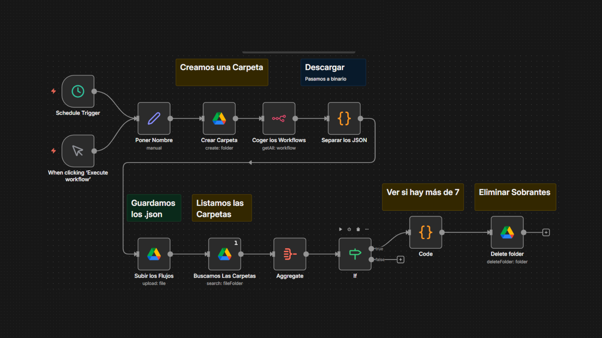

Flujos de trabajo · Procesos automatizados · Eficiencia operativa
Esta colección reúne automatizaciones desarrolladas en n8n para mejorar procesos reales, reducir errores y ahorrar tiempo. Cada flujo está diseñado de forma modular, limpia y escalable.
Sigo ampliando y manteniendo esta colección, creando nuevas herramientas internas cuando detecto oportunidades de automatización.
Flujos ligeros pero críticos para tareas cotidianas.
Fáciles de mantener y actualizar.
Personalización avanzada según necesidad.
Múltiples APIs y servicios externos.
Exporta diariamente todos los workflows de n8n a Google Drive en formato JSON, manteniendo versiones históricas para recuperación.
Borra e importa workflows desde Google Drive. Ideal para migraciones, recuperación de desastres y pruebas.
Valida datos, guarda en Google Sheets y envía confirmación por Gmail. En producción en tu portfolio.
Captura fallos, genera logs estructurados y registra en Google Sheets para diagnóstico.
Asistente con IA, mensajes de voz/texto, integración con Google Calendar, Airtable y Gmail.
Agente avanzado con Qdrant, procesamiento de lenguaje natural y registro en Supabase.
Motor principal de automatización
Backups automáticos
Logging y almacenamiento ligero
Notificaciones y correos
Interfaz de chat
Procesamiento inteligente
Automatización de agenda
Base de datos
Lógica personalizada